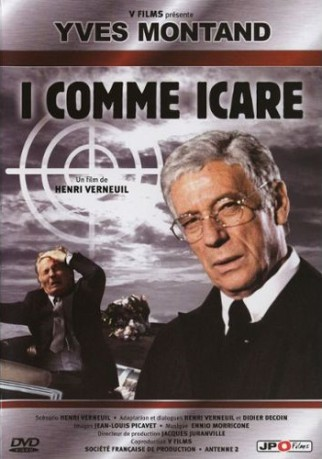

#6198 I, wie Ikarus
Alternativ: Spürhund, Der (Originaltitel)
 
 IMDB-Wertung: 8.1 / 10
IMDB-Wertung: 8.1 / 10  Metascore: 0
Metascore: 0 
After the recently re-elected President of a fictitious state has been assassinated, one of the members of the investigation committee refuses to sign the final report and is given the task of investigating once more. In the course of his search he finds evidence that casts serious doubt on the committee's "lone-gunman" theory... A very bold film that basically told the "JFK" story thinly disguised as having taken place not in the US.
Jahr: 1979
Dauer: 128 Minuten
FSK: 12
Land: Frankreich Studio: Neue Constantin FilmTonspuren:
Untertitel: Deutsch,
Auflösung: 1080p (1792x1080) Größe: 8960 MB
Genre: Thriller, Drama, Krimi, Mystery
Regisseur: Henri Verneuil
Drehbuch: Jakob M. Erwa
Soundtrack:
Darsteller:
 Yves Montand als Le procureur Henri Volney
Yves Montand als Le procureur Henri Volney Maurice Bénichou als Robert Sanio, l'homme à la caméra
Maurice Bénichou als Robert Sanio, l'homme à la caméra Brigitte Lahaie als Ursula Hoffmann, la strip-teaseuse
Brigitte Lahaie als Ursula Hoffmann, la strip-teaseuse- Henri Verneuil als Le technicien régie TV / La voix du présentateur au cabaret , uncredited
- Michel Albertini als Luigi Lacosta
- Roland Amstutz als Pierre Gregory
- Jean-Pierre Bagot als Michaël Mix
- Georges Beller als Sam Kido
- Edmond Bernard als Le présentateur TV
- Françoise Bette als Jane Bellony
- Roland Blanche als Garcia Santos
- Benoît Brione als Le reporter au bobino
- Jacques Brylant als Nicolas Rosenko
- Gabriel Cattand als Le président Marc Jarry
- Nanette Corey als
- Jacques Denis als Despaul, le cobaye
- Erick Desmarestz als Bob Dagan
- Thierry Dewavrin als Le rédacteur du journal
- Etienne Dirand als Le médecin de l'hôpital
- Henry Djanik als Nick Farnese
- Michel Dussarat als Robert Kosheba
- Michel Etcheverry als Frédéric Heiniger, président de la cour de justice
- Joséphine Fresson als Marianne Delila
- Jean-François Garreaud als Vernon Calbert
- Jean-Claude Jay als Le sénateur Albert Philippe
- Bernard Larmande als
- Daniel Léger als Guillaume Géménos
- Jean Lescot als Franck Bellony
- Jean Leuvrais als Le ministre Robert Picart
- Gérard Lorin als Flavius, l'assistant de Naggara
- Marcel Maréchal als Rivoli, un cobaye
- Gérard Moisan als L'inspecteur au talkie walkie
- Louis Navarre als Maître Keller
- Jean Négroni als Carlos de Palma, l'homme au parapluie
- Jean Obé als Hugues Adler, le chef des services secrets révoqué
- Didier Obin-Labastrou als Serge Levis
- Alain Ollivier als Le directeur du laboratoire Kodak
- Paco als Le régisseur du 'Buffalo'
- Robert Party als Le général Anthony Baryn
- Michel Pilorgé als Le reporter TV
- Roger Planchon als Le professeur David Naggara
- Christian Remer als Charles Polodi
- Didier Sauvegrain als Karl Eric Daslow
- Jacques Sereys als Richard Mallory, chef des services secrets
- Georges Staquet als Le gardien de l'immeuble de l'assassinat
- Jacqueline Staup als Mme Lapierre, la secrétaire d'Heiniger
- Georges Trillat als L'inspecteur au bar 'Manhattan'
- Pierre Vernier als Charly Feruda
- Gilles Détroit als Un suspect sur les diapos , uncredited
- André Falcon als Darsell , uncredited
Datei: X:\1979\I, wie Ikarus (1979, FSK12, 1792x1080).mkv seit 11.05.2017
Festplatte: HD 1971-1979
 Es gibt insgesamt 29 Filme in der Gruppe '1979'
Es gibt insgesamt 29 Filme in der Gruppe '1979'